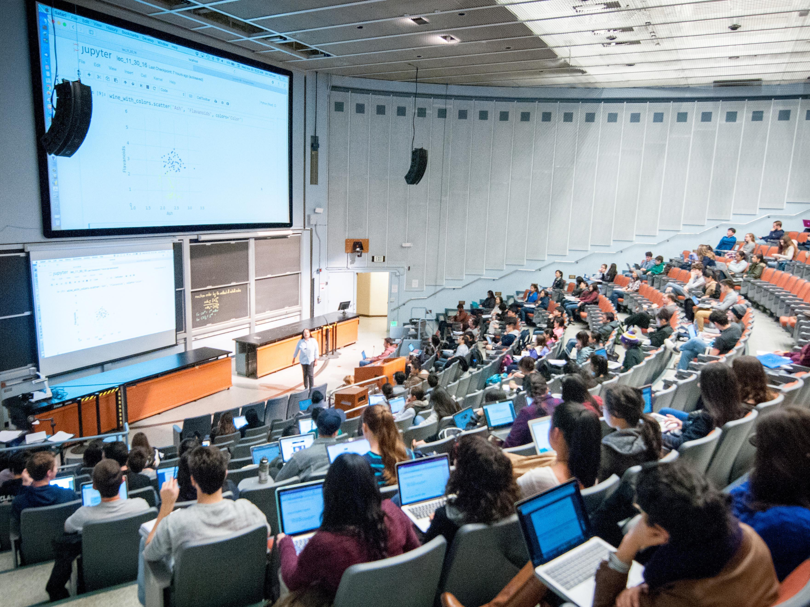
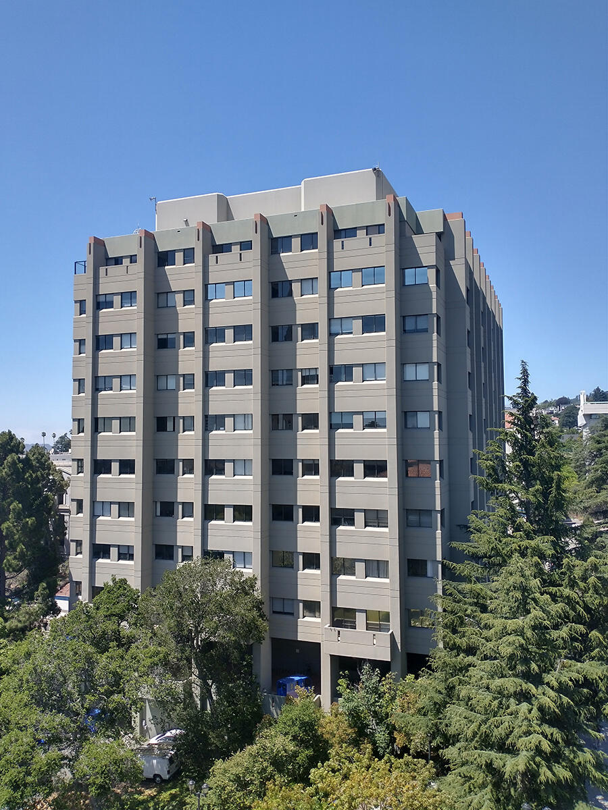

AI research Current

AI for educational
assessment systems
Contributing to research on AI, educational assessment, and psychometrics at UC Berkeley’s BEAR Center.
View profileUC Berkeley Computer Science Expected May 2028
I build full-stack product platforms, machine learning & AI systems, and robust data pipelines for real-world workflows.
Core stack
Python · Java · TypeScript · SQL · Next.js · React · OpenAI API · Ollama/Qwen
Tooling
Prisma · Git/GitHub · Linux · E2E testing · Graphviz · Mermaid · LikeC4

My journey
I’m a Computer Science student at UC Berkeley building full-stack products, AI systems, and developer tools for real-world workflows. I enjoy turning ambiguous problems into clear, reliable systems that people can actually use.
At Bay Area Rapid Transit (BART), I build local-first Python and SQL tooling that analyzes large legacy codebases and turns them into architecture reports, diagrams, and traceable system views. That work has deepened my interest in developer tooling, data modeling, and systems design.
At the UC Berkeley School of Education’s BEAR Center, I contribute to research at the intersection of AI, educational assessment, and psychometrics. I also build DinoApply, an education technology platform focused on making application guidance more structured and accessible. Together, these experiences shape how I build: technically rigorous, user-centered, and grounded in real-world use.
Read my resumeSelected work
Credentials & recognition
Selected recognition and continued learning across technology, education, and research.
UC Berkeley May 2024
Latin America Leadership Academy April 2024
April 2023
University of Colorado Boulder February 2023
View credentialThe Johns Hopkins University January 2023
View credentialAdditional work
Migration tooling and client delivery, presented as supporting work.
Academic exploration
AI research Current

Contributing to research on AI, educational assessment, and psychometrics at UC Berkeley’s BEAR Center.
View profileMathematics 2025

Modeled a bottle-like 3D shape with Lagrange multipliers and integral calculus, then checked the result numerically.
View publicationPhysics 2023
Investigated gas-volume and mass relationships through theoretical modeling and calculations based on the ideal-gas model.
View publicationCollaboration
I’m open to thoughtful collaborations, research, and ambitious products with real-world impact.
Start a conversationWorked on
 Project Access
Education access
Project Access
Education access
 PeruEduca
Public education
PeruEduca
Public education
 HundrED
Education innovation
HundrED
Education innovation